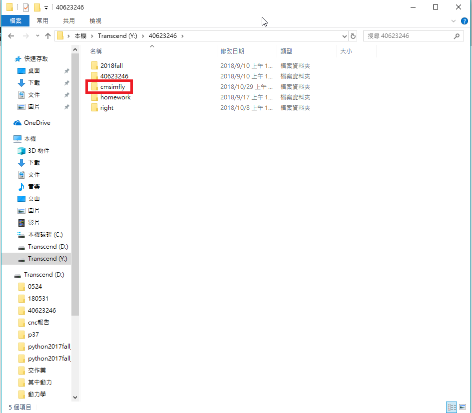
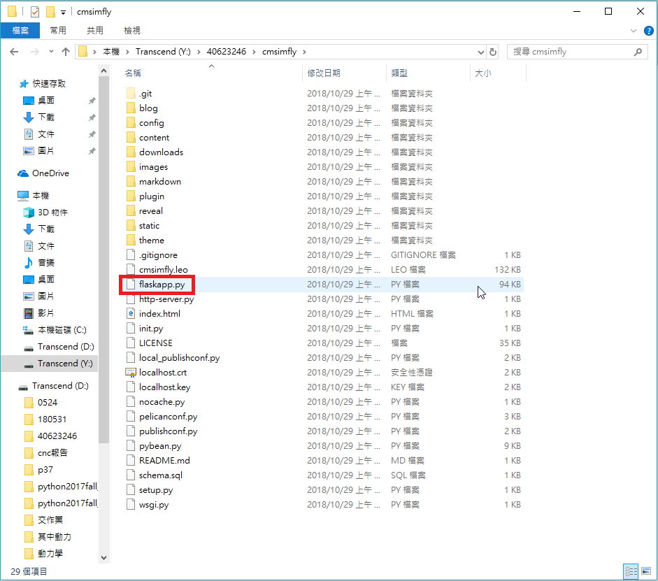

2018 Fall 40623246 分組網站
Home
Site Map
reveal
blog
簡介
CMSimfly 網站
reveal 投影片
pelican 網誌
組員操作影片
Week1
教學影片-1
為什麼要二段式這麼麻煩？
Week2
教學影片-2
Week3
Week4
教學影片-3
onshape homework week1
week5
教學影片-4
week6
教學影片-5
week7
教學影片-6
Python 手冊
OnShape 手冊
Fusion 360
教學影片-4 <<
Previous
Next
>> 教學影片-5
week6
更新
倉儲中的 flaskapp.py 至最新版本
搜尋 github cmsimfly
克隆該倉儲

將其中
flaskapp.py 的檔案複製進自己的倉儲，選擇
複製並取代

教學影片-4 <<
Previous
Next
>> 教學影片-5